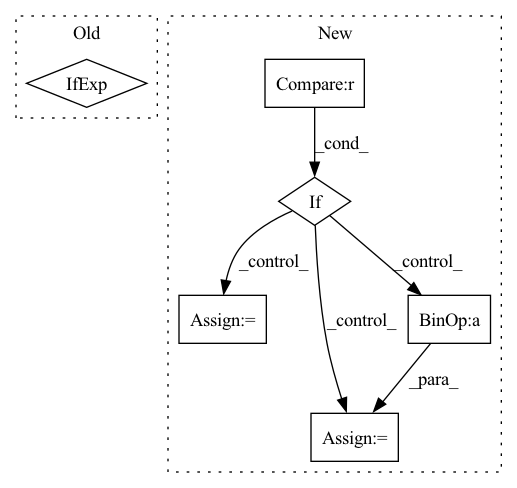

Pattern ID :2976
Before Change
self.final_conv = Block(pre_channel, default(out_channel, in_channel))
def forward(self, x, time):
t = self.time_mlp(time) if exists(self.time_mlp) else None
feats = []
for layer in self.downs:After Change
idx = 0
for layer in self.ups:
info = feats.pop()
if idx >= self.skip_start :
x = layer(x+ info, noise_embed)
else:
x = layer(x, noise_embed)
idx += 1
return self.final_conv(x)
In pattern: SUPERPATTERN
Frequency: 4
Non-data size: 6
Instances Fragment ID: 16333209
Project Name: janspiry/image-super-resolution-via-iterative-refinement
Commit Name: e4bf6add27ee36067514a0b3debcd3bf98dbaa17
Time: 2021-08-03
Author: jiangliangwei@tetras.com
File Name: model/modules/unet.py
M Class Name: UNet
N Class Name: UNet
M Method Name: forward(3)
N Method Name: forward(3)
M Parent Class: nn.Module
N Parent Class: nn.Module
M File Name: model/modules/unet.py
N File Name: model/modules/unet.py
M Start Line: 303
M End Line: 325
N Start Line: 241
N End Line: 255
Before Change
reconstruction_loss = self.mse(reconstructed_inputs, compressor_inputs)
n, _, h, w = compressor_inputs.shape
num_pixels = n * h * w
bpp = -likelihoods.log2().sum() if self.reduction == "sum" else -likelihoods.log2().sum() / num_pixels
return reconstruction_loss + self.beta * bpp
After Change
num_pixels = n * h * w
if self.reduction == "sum":
bpp = -likelihoods.log2().sum()
elif self.reduction == "batchmean" :
bpp = -likelihoods.log2().sum() / n
else:
bpp = -likelihoods.log2().sum() / num_pixels
return reconstruction_loss + self.beta * bpp
Fragment ID: 16333208
Project Name: yoshitomo-matsubara/supervised-compression
Commit Name: 9b1d3c8701acc1d216c6cd515f994d690d318722
Time: 2021-03-02
Author: yoshitom@uci.edu
File Name: custom/loss.py
M Class Name: BppBasedLoss
N Class Name: BppBasedLoss
M Method Name: forward(2)
N Method Name: forward(2)
M Parent Class: nn.Module
N Parent Class: nn.Module
M File Name: custom/loss.py
N File Name: custom/loss.py
M Start Line: 44
M End Line: 45
N Start Line: 44
N End Line: 51
Before Change
// else:
// lmbda = 1.0
lmbda = epoch/25.0 if epoch <= 25 else 1.0
loss_domain = self.domain_loss(grad_reverse(anchor_output, lmbda), targets_sketch) + self.domain_loss(grad_reverse(positive_output, lmbda), targets_photos) + self.domain_loss(grad_reverse(negative_output, lmbda), targets_photos)After Change
targets_sketch = torch.zeros(batch_size).to(self.device)
targets_photos = torch.ones(batch_size).to(self.device)
if epoch < 5 :
lmbda = 0
elif epoch < 25:
lmbda = (epoch- 5)/20.0
else:
lmbda = 1.0
Fragment ID: 16333179
Project Name: ashok-arjun/zero-shot-sketch-based-image-retrieval
Commit Name: 085a42cbf259a0114fd96e1b8acfa2c75bb79c31
Time: 2020-08-16
Author: arjun2000ashok@gmail.com
File Name: model/loss.py
M Class Name: DetangledJointDomainLoss
N Class Name: DetangledJointDomainLoss
M Method Name: forward(6)
N Method Name: forward(6)
M Parent Class: nn.Module
N Parent Class: nn.Module
M File Name: model/loss.py
N File Name: model/loss.py
M Start Line: 112
M End Line: 132
N Start Line: 114
N End Line: 138
Before Change
self.final_conv = Block(pre_channel, default(out_channel, in_channel))
def forward(self, x, time):
t = self.time_mlp(time) if exists(self.time_mlp) else None
feats = []
for layer in self.downs:After Change
idx = 0
for layer in self.ups:
info = feats.pop()
if idx >= self.skip_start :
x = layer(x+ info, noise_embed)
else:
x = layer(x, noise_embed)
idx += 1
return self.final_conv(x)
Fragment ID: 16333213
Project Name: janspiry/image-super-resolution-via-iterative-refinement
Commit Name: 12c2447fe9d989a51a1674b23fbb225c783186e5
Time: 2021-08-03
Author: lw_jiang@foxmail.com
File Name: model/modules/unet.py
M Class Name: UNet
N Class Name: UNet
M Method Name: forward(3)
N Method Name: forward(3)
M Parent Class: nn.Module
N Parent Class: nn.Module
M File Name: model/modules/unet.py
N File Name: model/modules/unet.py
M Start Line: 303
M End Line: 325
N Start Line: 241
N End Line: 255